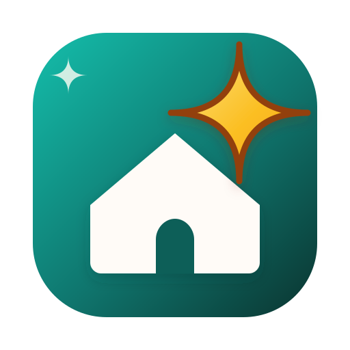
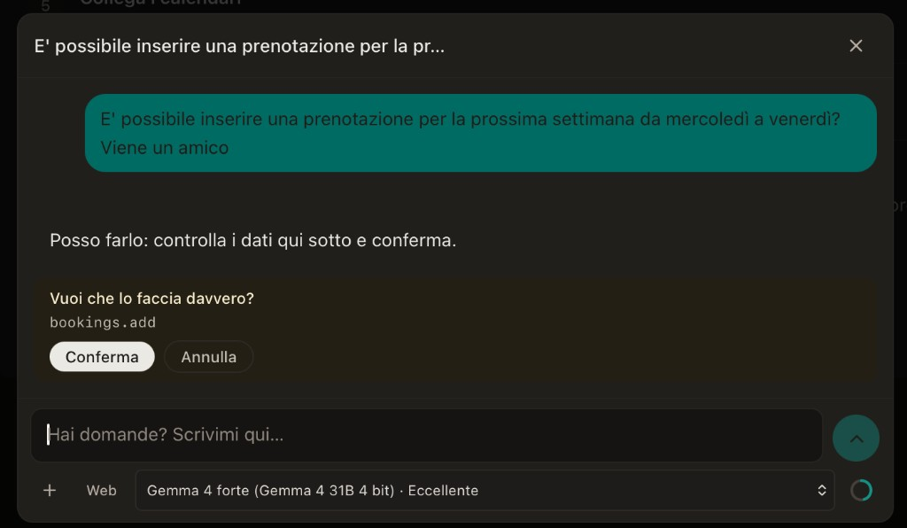
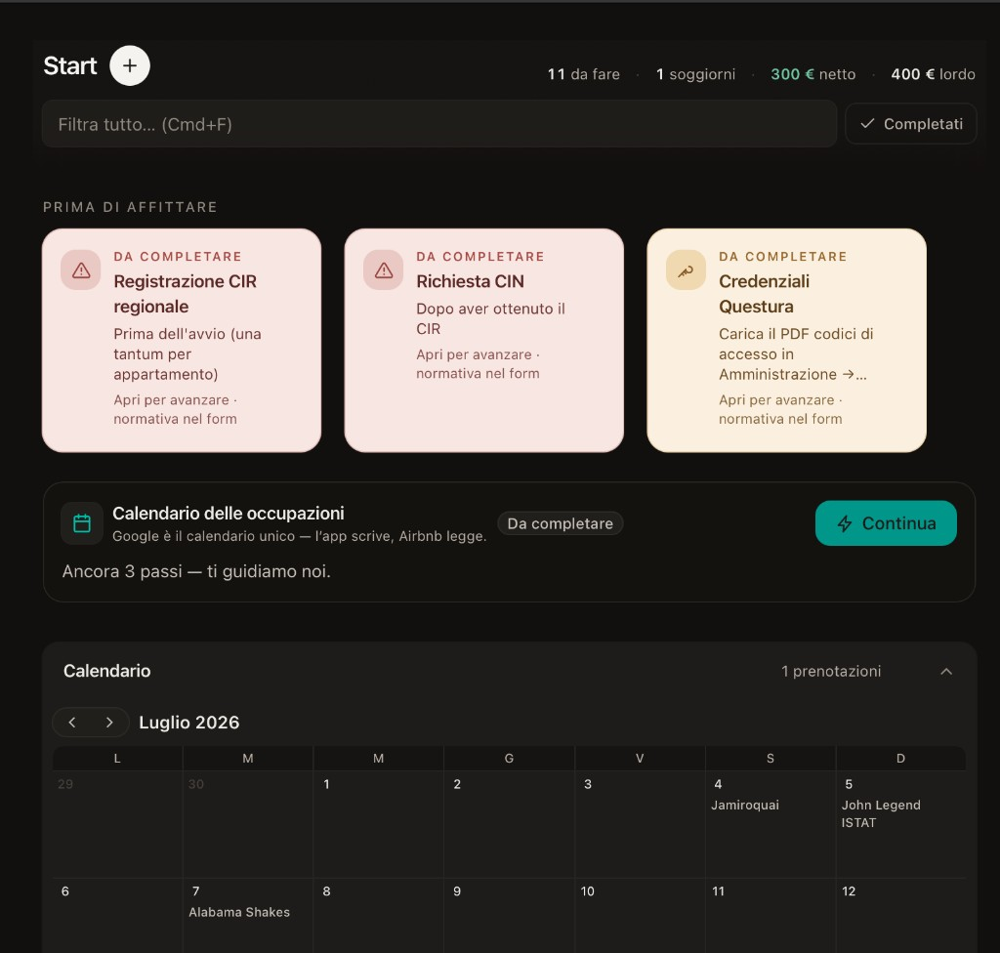
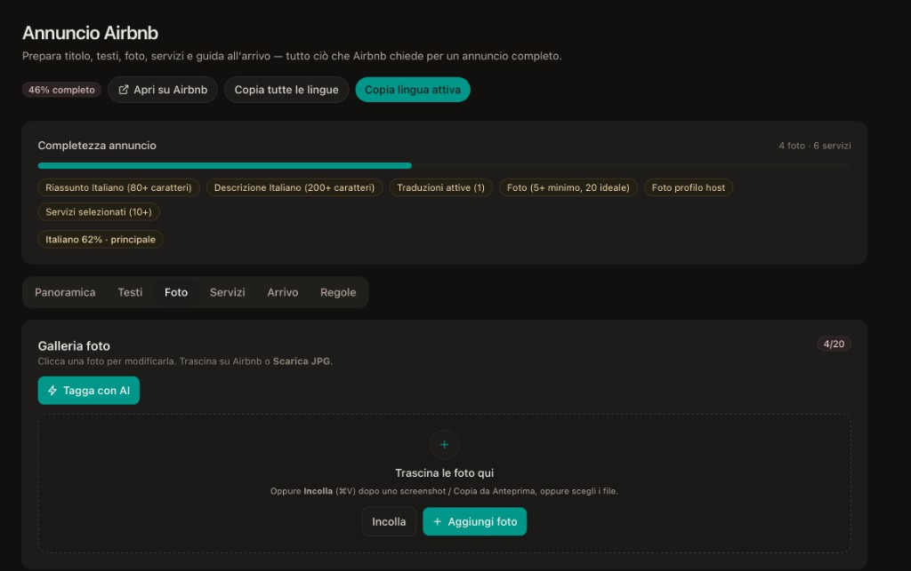
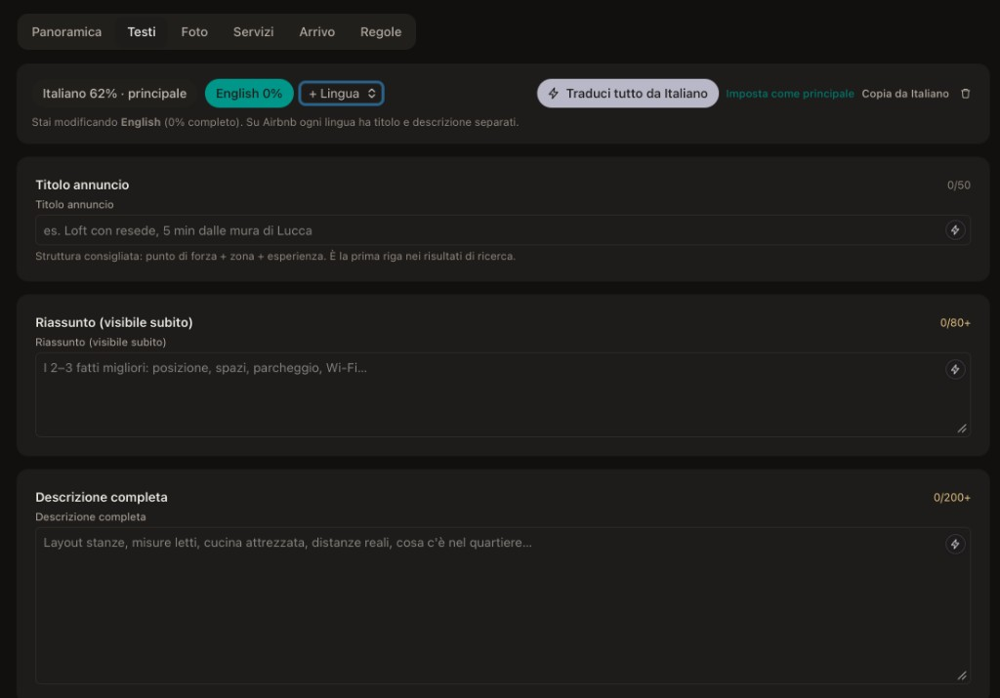
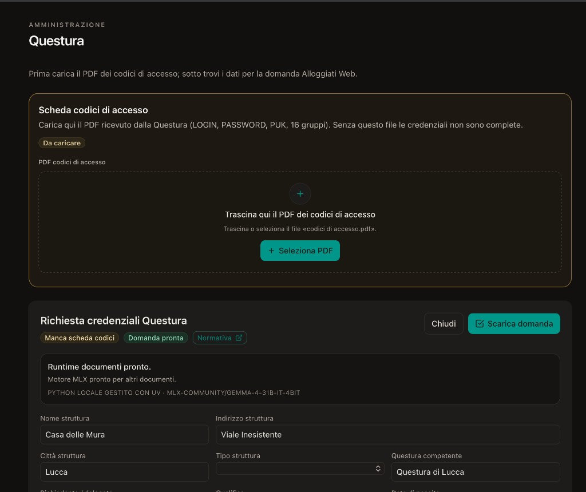
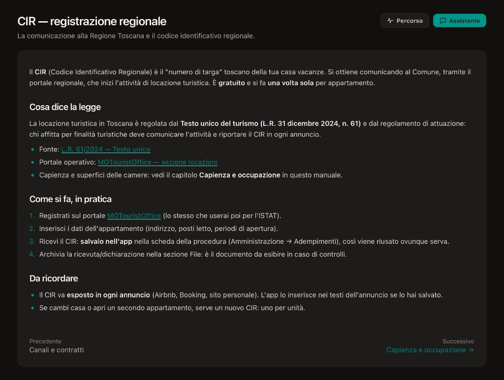
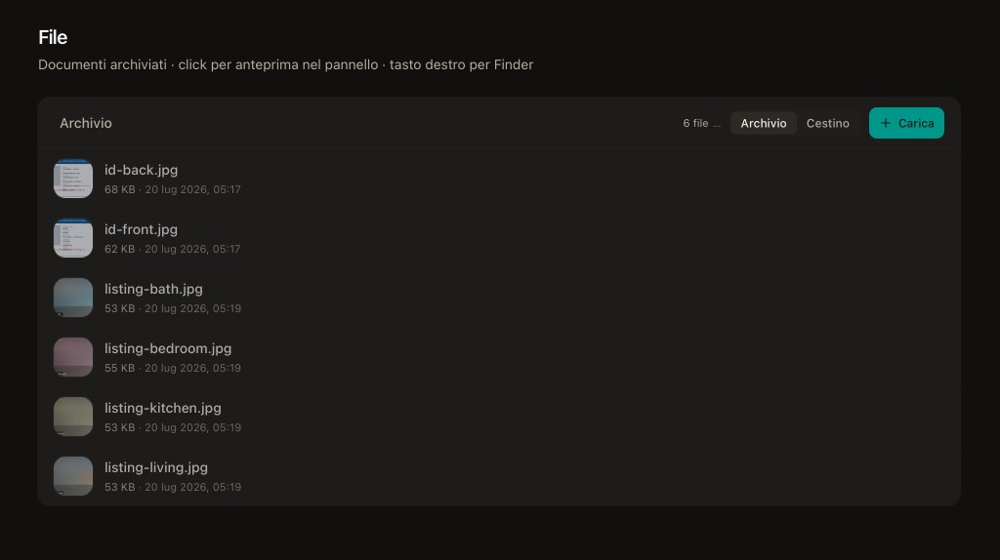

Conosce la tua città
Lucca non è “una location”. Eventi, stagionalità, tono dell’annuncio: CreaBnB è pensata intorno a come si ospita qui.

CreaBnB Lucca
An Artware Studio
L’unica app locale. Conosce la tua città.
Local-first: i tuoi dati restano sul computer o su Drive/Dropbox tuoi. CreaBnB conosce Lucca — eventi, regole, adempimenti e trend — e ti guida con un Percorso chiaro.

Local-first
Non un gestionale generico in cloud. Uno strumento che vive sul tuo computer, parla la tua città e non ti chiede di diventare esperto di software.
Lucca non è “una location”. Eventi, stagionalità, tono dell’annuncio: CreaBnB è pensata intorno a come si ospita qui.
Questura, ISTAT, CIR/CIN, documenti — nel Percorso, non sparsi in dieci portali.
Calendario e prezzi legati a come si muove la domanda locale, non a dashboard pensate per catene internazionali.
File JSON sul disco o su Drive/Dropbox. OCR e assistente in locale. Niente account cloud obbligatorio per “sbloccare” casa tua.
Nell’app
Screenshot dall’app. L’AI locale gira sul tuo computer: gratuita e privata.
AI locale · sul tuo computer · gratis · privata — i documenti e le chat non escono dal computer.

Start — scadenze e calendario
Cosa manca prima di affittare, soggiorni e agenda in un colpo d’occhio.
Chat AI locale
Prenotazioni e domande in linguaggio naturale — il modello gira sul tuo computer, tu confermi ogni azione.

Foto annuncio + tag AI
Galleria Airbnb: trascina, incolla, etichetta le stanze con AI locale.

Testi e traduzioni AI
Titolo, riassunto e descrizione — traduci tutto da italiano restando offline.

Domanda Questura
Compila e scarica la richiesta Alloggiati Web — flusso strutturato, non solo chat.

Manuale CIR
Guide normative integrate, con link alle fonti ufficiali toscane.

Archivio file
Documenti e foto dell’ospite e della casa, sul tuo disco (o Drive/Dropbox).
1 / 7
Modelli sul tuo computer — gratis e privati.
Flussi strutturati che restano utili anche offline dall’assistente.
Finestra nativa, aggiornamenti con conferma. Release pubbliche solo come binari.
Repository pubblico: make-become/creabnb